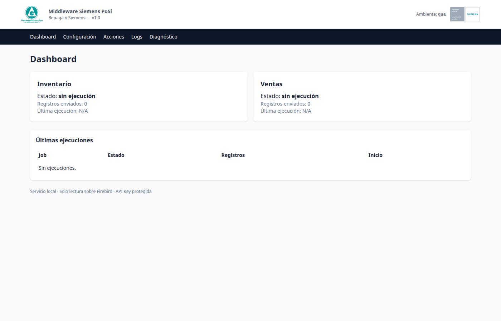
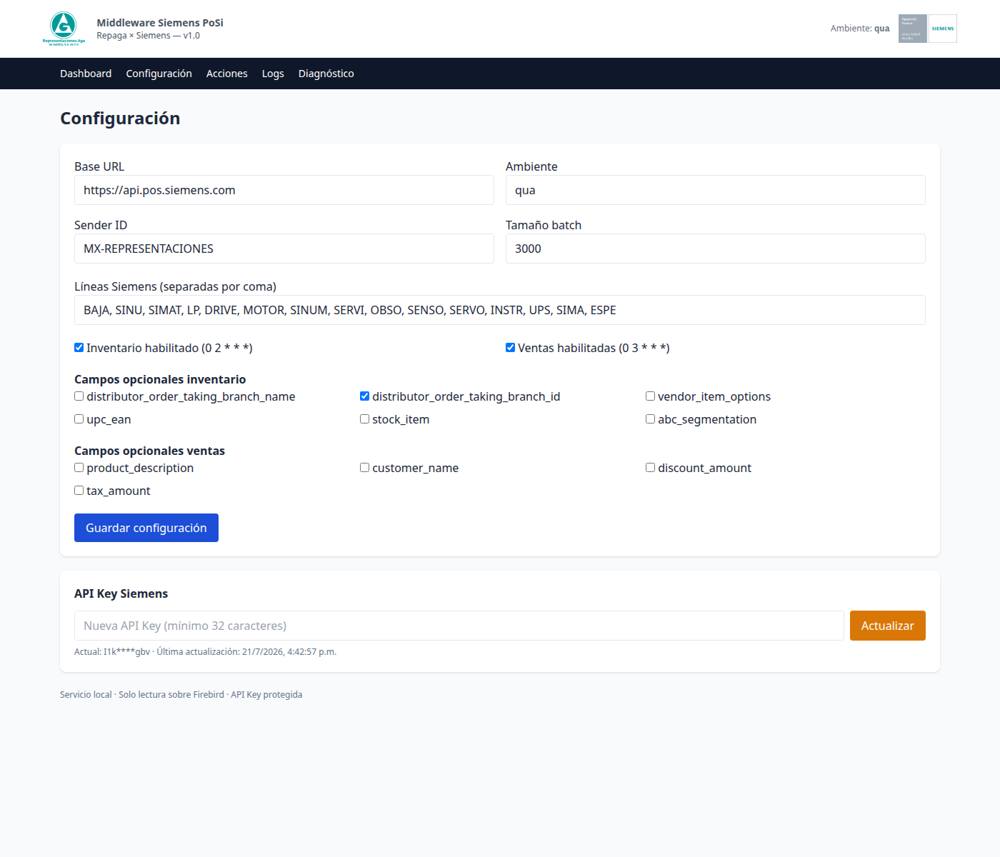
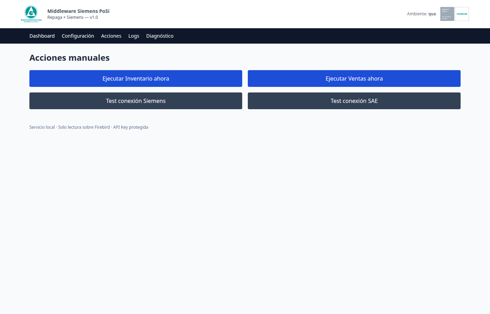
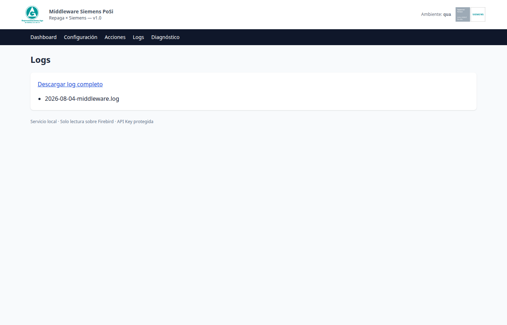
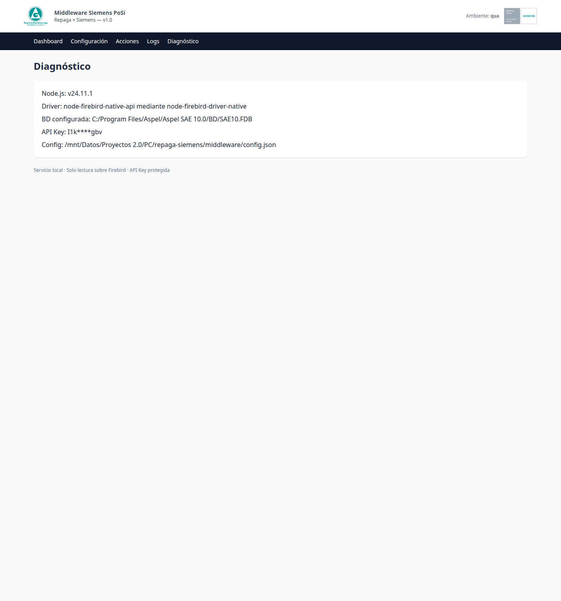

Para: Ing. Francisco Aguirre — Representaciones Aga de Saltillo Aplicación: Valueflow Middleware v1.0 Sistema origen: Aspel SAE 10 (Firebird 5.0) Sistema destino: Siemens PoSi Portal
Este software conecta su sistema Aspel SAE 10 con el portal Siemens PoSi, enviando automáticamente todos los días:
Todo esto sin que usted tenga que hacer nada. El sistema corre como un servicio de Windows en su PC y trabaja en segundo plano.
Usted solo necesita saber cómo abrir la interfaz, ver si todo está bien, y cambiar la contraseña de Siemens cuando se lo pidan.
Abra Google Chrome o Microsoft Edge (cualquier navegador moderno)
En la barra de direcciones escriba exactamente:
http://localhost:4567
Presione Enter
💡 ¿Qué es "localhost"? Es la dirección de su propia computadora. No abre internet, solo el programa que está instalado en su PC.
La primera vez le pedirá usuario y contraseña:
| Campo | Valor |
|---|---|
| Usuario | admin |
| Contraseña | La que se configuró durante la instalación |
Si olvidó la contraseña, contacte a su proveedor (VCorp).
Una vez dentro, verá un menú oscuro con 5 opciones en la parte superior:
Vamos a ver cada una.

Es la pantalla de inicio. Le muestra de un vistazo si todo está funcionando bien.
Logos en la parte superior
Dos tarjetas grandes — estado de cada trabajo automático:
Cada tarjeta muestra:
correcto (verde) o con error (rojo) o sin ejecución (gris)Tabla "Últimas ejecuciones": historial de los últimos 10 envíos, con su estado.
Pie de página: "Servicio local · Solo lectura sobre Firebird · API Key protegida" — esto significa que el programa NO modifica su sistema Aspel, solo lee.
Si ve esto, todo está bien:
Si ve "con error" (rojo) o "sin ejecución" (gris):

Aquí se cambian los datos de conexión del sistema. No la use a menos que se lo pida el soporte o cambie la contraseña de Siemens.
Bloque 1 — Identidad de Siemens:
Bloque 2 — Líneas Siemens:
Lista de las 15 líneas de producto que se consideran "marca Siemens":
BAJA, SINU, SIMAT, LP, DRIVE, MOTOR, SINUM, SERVI, OBSO, SENSO, SERVO, INSTR, UPS, SIMA, ESPE
Si Siemens agrega una nueva línea de producto, se puede agregar aquí.
Bloque 3 — Trabajos automáticos:
Bloque 4 — Campos opcionales: Información extra que se puede enviar o no. Por defecto todos están apagados. No los active a menos que Siemens se los pida.
Bloque 5 — API Key Siemens (MUY IMPORTANTE): Aquí se cambia la contraseña de Siemens sin reiniciar nada.
Después de actualizar: la próxima vez que el sistema envíe información (02:00 o 03:00 AM), usará la nueva clave automáticamente. No se reinicia nada.
🔒 Seguridad: la clave nunca se muestra completa, solo enmascarada (ejemplo:
I1k****gbv).
Si necesita que el inventario o las ventas corran a otra hora:
0 2 * * * = a las 02:00 AM todos los días)Si desmarca "Inventario habilitado" o "Ventas habilitadas": ese trabajo deja de correr automáticamente. El otro sigue funcionando.

Aquí puede ejecutar los envíos manualmente sin esperar a la hora programada. También hay pruebas de conexión.
Fila 1 — Botones azules (los más usados):
🟦 Ejecutar Inventario ahora
🟦 Ejecutar Ventas ahora
Fila 2 — Botones grises (los de diagnóstico):
⬛ Test conexión Siemens
⬛ Test conexión SAE
Después de hacer clic, aparece debajo un mensaje:

Es el historial de todo lo que ha hecho el sistema: cada envío, cada error, cada conexión. Como una "caja negra" de avión.
.log que puede abrir con el Bloc de NotasLíneas como estas:
{"level":"info","message":"Schedulers iniciados","timestamp":"2026-07-21T08:00:00.000Z"}
{"level":"info","message":"UI iniciada","timestamp":"2026-07-21T08:00:01.000Z"}
{"level":"info","message":"Prueba de conexión Siemens ejecutada","status":201}
Qué significan:
level: info = todo bienlevel: warn = advertencia (puede ser normal)level: error = problema, hay que revisar🔒 Seguridad: las claves y contraseñas NUNCA aparecen completas en el log. Solo se ven enmascaradas.

Muestra la "salud" del sistema: versión del software, rutas de instalación, conexión a Aspel. Es información técnica que el soporte puede pedirle.
I1k****gbv)Sí. A las 02:00 AM envía inventario y a las 03:00 AM envía ventas, todos los días, automáticamente.
Revise el Dashboard cada mañana. Las dos tarjetas deben estar en verde.
El programa arranca solo cuando se enciende la PC (es un servicio de Windows). No se pierde información. El próximo envío programado se ejecuta normalmente.
Sí. El sistema sigue trabajando en segundo plano. Solo necesita abrir el navegador para verificar el Dashboard o cambiar configuración.
Cuando Siemens se lo pida (usualmente cada 6-12 meses). Se cambia desde la pantalla Configuración en 30 segundos.
No, jamás. Solo lee información. Su Aspel SAE 10 sigue exactamente igual que antes. Esto está protegido por permisos de solo-lectura en la base de datos.
Si hay un error de comunicación, el sistema reintenta automáticamente hasta 5 veces con pausas entre cada intento. Si después de eso sigue fallando, se registra el error en los logs y se muestra en el Dashboard.
No. El sistema se mantiene solo. Solo revise el Dashboard de vez en cuando.
Proveedor: VCorp — Frank Saavedra Email: frank@vcorp.mx Cliente: Representaciones Aga de Saltillo Contacto técnico: Ing. Francisco Aguirre
Si tiene dudas, contacte a su proveedor. Tenga a la mano:
Manual generado el 2026-08-04 — Versión 1.0 Compatible con Middleware Repaga × Siemens PoSi v1.0